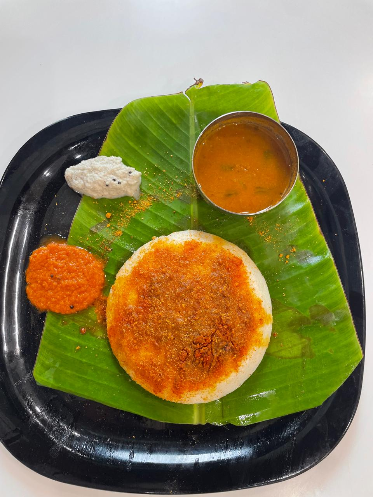
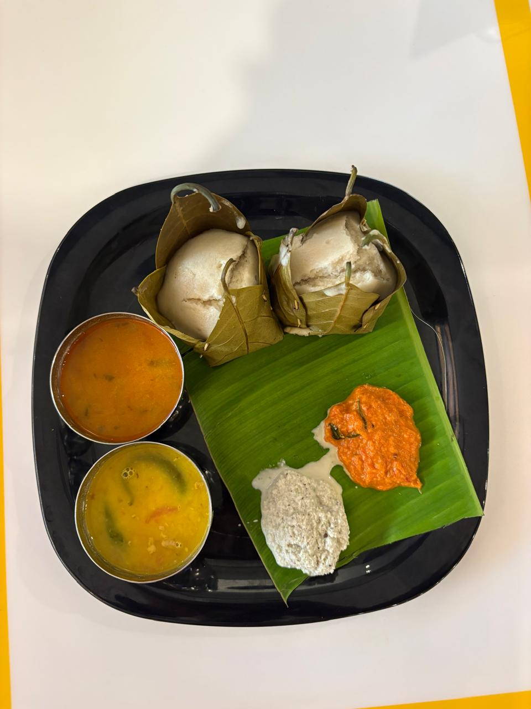
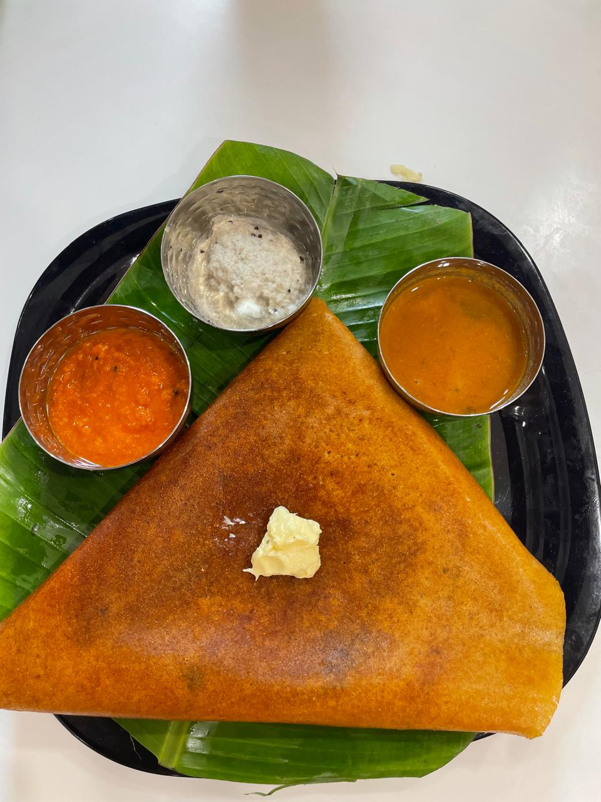

If you are on a quest to find the best pure veg restaurant in Brahmavara, look no further than Mathuram Cafe. Located conveniently at Laxmi Empire, exactly Opposite Krishi Kendra, we offer an unparalleled culinary experience dedicated entirely to 100% pure vegetarian cuisine.
Our philosophy is simple: serve high-quality, delicious, and hygienic vegetarian food that comforts the soul. Whether you are a local resident, a family passing through, or a food enthusiast looking for authentic flavors, Mathuram Cafe guarantees a meal that you will remember.

Uncompromising Quality and Hygiene
In today's fast-paced world, finding a restaurant that maintains strict hygiene standards while serving mouth-watering dishes can be challenging. As the premier pure veg destination in Brahmavara, we pride ourselves on our immaculate kitchen standards. We source only the freshest vegetables, highest quality spices, and pure ghee to ensure every dish meets our golden standard.
When you dine with us, you aren't just eating a meal; you are experiencing the rich heritage of Indian vegetarian cooking, prepared in a kitchen that respects the purity of veg-only preparation.
A Diverse Menu to Satisfy Every Craving
While we are deeply rooted in South Indian traditions, our menu is a celebration of vegetarian diversity. From crispy dosas and fluffy idlis to robust North Indian curries and tantalizing Indo-Chinese delicacies, there is something for everyone.
Check out our Dosa varieties which are a crowd favorite. Every batter is freshly ground, naturally fermented, and cooked to golden perfection on our sizzling tawas.

Perfect for Every Occasion
Whether it is a quick solo breakfast, a casual lunch with colleagues, or a grand family dinner, Mathuram Cafe provides the perfect setting. We offer both AC fine-dine and Non-AC sections to suit your comfort and budget. For those on the move, our convenient Drive-Thru facility ensures you never have to miss out on the best pure veg food in Brahmavara.
Our commitment to quality, combined with our warm hospitality and serene ambiance, has made us a beloved landmark opposite Krishi Kendra. We believe that vegetarian food should never be boring, and our chefs work tirelessly to innovate while staying true to traditional roots.
Visit Us Today
Join us at Mathuram Cafe and discover why we are celebrated as the best pure veg restaurant in Brahmavara. Experience the magic of spices, the warmth of great service, and the joy of a perfectly cooked vegetarian meal.

Don't forget to explore our full menu online before you arrive, or simply drop in and let our friendly staff recommend the day's special!